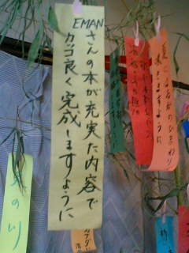

2006年１月２日
妻と息子が実家から、私の実家へ帰って来た。
久しぶりに顔が見れて嬉しい。
物理の勉強は進んだかって？
正月に何が出来るというんだ。
普段は出来ないようなメンテナンス的な作業はした。
2006年１月５日
自宅へ戻ってくる。
2006年１月７日
世界物理年の日本委員会のメールマガジンによると、
日本では年度末までを「物理年」としているようだ。
2006年１月８日
明日から仕事が始まるというので少々鬱気味である。
休み中の更新はほとんどできなかった。
ほとんど気付かれないようなところを幾つか直しただけである。
2006年１月１０日
相対論の記事（リーマン幾何学）を実際に書き始めた。
全体の流れの構想がまだ固まってないので、一つずつ順番に発表できないかも知れない。
５つくらいに分けてほぼ並行して書き進めて行っている。
発表は２月頃にまとめて、という感じになるだろうか。
2006年１月１２日
相対論の記事がかなり順調に進んでいる。
連休のたびにあれほど悩んだところが、何の問題もなかったように式変形できてしまった。
去年のゴールデンウィークにまとめておいた紙を無くしてしまって困っていたが、
それよりもよっぽどいい感じにシンプルにまとまりそうだ。
最近、４時間睡眠である。
2006年１月１６日
忙しくなってしまった。
基底ベクトルをよく理解できていない気がする。
2006年１月１７日
自転車を盗まれた。
2006年１月２４日
トップページのコメントが「明けましておめでとう」のままでは
そろそろ恥ずかしいので、手早く仕上げられそうな記事から発表してしまおう。
この辺りは続きの話なので、途中からでは何のことやら分からないとは思うが、
更新の努力をしているということを示しておこう。
2006年２月２４日
一週間の上海出張ももうすぐ終わり。
居心地が良すぎてすっかり「中国かぶれ」になってしまっている。
今まで見えなかった部分が見えて、
どうしてもつながらなかったピースがようやくつながった気分だ。
世界をこういう視点で見られるようになることをずっと前から望んでいた。
しかし私の理解はまだまだほんの一部なのだろう。
2006年３月１日
屈辱だな。
これまで風邪などはすぐに治せていたのにこんなに引きずってしまうなんて。
気力で免疫系をコントロールできると心から信じていたのだが、
最近は合理的な考え方が身についてしまって、
「信じていれば免疫系にいい影響がある」程度にしか考えていなかった。
それで奇跡も随分と減ってしまった。
2006年３月２日
普通の風邪ではなく、インフルエンザだと分かった。
だから仕方ないとは思わない。
こんなものにやられてしまうとは情けない。
最近は１０分程度で簡単に判定できてしまうんだな。
知らなかった。
早く医者に行っておけば良かった。
去年、別の病院で医者にぶつぶつ言われた末、
胃の悪くなるだけの効かない薬しかもらえなかったので医療不信に陥っていた。
そもそも薬は嫌い。
2006年３月４日
あああっ、「若さ」が欲しい。
昔はそんなものに価値など見出さなかった。
むしろ要らなかった。
そんなものを欲しがる者を見下していた。
それが「若さ」ってもんだ。
しかし妻は今でも「おばあちゃん」になることに憧れている。
2006年３月６日
人体って不思議だな。
あまりに安定に出来すぎている。
こんなに巨大なシステムである私を３０年以上、維持し続けることができるなんて。
2006年３月８日
出張のどさくさで紛失していた記事の原稿が奇跡的な方法で見つかった。
ほとんど諦めていたし、もう一度同じものを書き直す気力も失っていた。
取り戻すのに２週間はかかったことだろう。
2006年３月８日
会社から帰ってきたら盗まれた自転車が置いてあった。
犯人が別件で捕まって、警察が持ってきてくれたそうだ。
妻は詳しくは聞かなかったが転売目的で盗みを繰り返していたらしい。
誕生日におきた奇跡の第二弾である。
2006年４月１日
このサイトの内容を書籍化することになった。
エイプリルフールの嘘ではない。
2006年４月１５日
書籍化の準備として力学のページの TeX 化作業を始めよう。
一旦本の形式にしてみないと雰囲気が出ない。
公開記事の方を整えてからにしようと思っていたが、順序変更だ。
色々と直さなくてはならない部分に次から次へと気が付く。
2006年４月２３日
この週末は妻と息子が実家の手伝いの為に帰っているので、
思う存分、色んなことが出来るだろうと思っていた。
普段の疲れが出て、少し仮眠を取ることはあったが、
それ以外は、ほとんど時間を無駄にすることはなかった。
それでも電磁気学のページの数式の TeX 化は半分しか終わらなかった。
同じような週末がもう一回欲しい。
2006年４月２５日
力学のページを修正中。
初期の雰囲気を残しながらも最近のスタイルに近づける。
やたらとカラーで強調するのをやめて、
無意味な改行を減らし、記号は半角に統一。
語尾にも気を遣ってみる。
これだけで野暮ったい感じが消えて、ずいぶんすっきりとしてきた。
くどい部分も雰囲気を損ねない範囲でなくして行きたい。
初期の頃は面倒な説明をすっ飛ばしたものだが、もう少し親切にやってみよう。
ある時から思い描き始めた「あるべき姿」に近付いてきた。
ここはもうすぐ「完成」する。
2006年４月２６日
あまり洗練し過ぎると見通しが良くなって、
かつて疑問だったところが疑問として提起できなくなってしまう。
しかし私の持論に、
「物理は面白く書く必要はなくて、そのまま書けば面白い」
というのがある。
それで下手な細工はしないに限る、とも思う。
そこがジレンマだ。
2006年４月２７日
最近の加筆修正の意義
- 質量という言葉が説明もなく使われ始めているのが前から気になっていた。
- 電磁気学でニュートンの運動方程式として F = dp/dt を引用していたが、
この形式が以前のどこにも書かれていなかった。
- 解析力学で F = -dV/dx を使っているが、その意味をどこにも説明していなかった。
- 「本当の意味は相対論を学ばないと分からない」と断ってはいたが、
「光に質量がある」との表現は非常にまずかった。
- 本質的な問題にはならないが、
運動する物体の質量が増加するとの考えが考察の中で使われていた。
2006年４月２８日
会社の休みの日程がようやく決まった。
明日からだ。
これから計画を練る。
2006年４月２９日
妻が家の中のことを整えたいと言うので、今年は慌てて実家に帰ることはしない。
他の用事もあってどうせすぐには帰れない。
掃除の手伝いと子供のお守り。
2006年５月２日
息子が幼稚園から帰ってきてから、私の実家へ向かう。
2006年５月３日
息子、遊園地デビュー。
2006年５月４日
妻の実家へ向かう。
今年は予定がなかなか決まらなかったが、今朝から田植えを始めるそうだ。
これまた急な話だ。
到着は昼になった。
この日は苗運びと、購入した田植え機の試運転。
一町とか、一反とか、SI単位系でない数え方にまだ馴染めない。
2006年５月５日
一日農作業。
苗箱洗いをしながら、色々と考える。
2006年５月６日
初めの予定ではこの日の朝に帰るつもりだったが、
午前中は田植えを手伝って行く事にする。
2006年５月８日
角運動量保存のことで悩み始めた。
書籍化の準備もあり、
こんなところで留まっているどころじゃないのだが。
ちゃんと解決できるだろうか。
答えはちゃんとあるはずなんだ。
2006年５月９日
角運動量保存のことが解決した。
次の記事はちょっといい感じにまとまりそうだ。
2006年５月１０日
力学の修正作業が一段落。
結構、満足の行く結果だ。
ようやく電磁気学に取り掛かれる。
前から気になっていて直したい部分は以下の通り。
- 工事中になっている「電磁誘導」の記事を仕上げる。
- 自己場が自身に力を与えないことの数式による説明を追加。
- 「直線上の電荷が作る電場の計算」の追加。
- 制動放射の記事の追加。
- ポテンシャルの図。
- ガウスの定理の図。
- ストークスの定理の図。
- 電波についての図。
- 数式のTeX化。
- 磁化についての説明の見直し。
- 分極についての説明の見直し。
2006年５月１８日
電磁気学のページの数式をすべて TeX 画像に直す作業をしている。
少しずつしか進まない大変な作業だ。
しかし、新しい驚きを含んだ記事が増えて行かない最近の状況は
読者にとってはつまらないだろうなぁ、と同情する。
2006年５月２０日
最近、掲示板に猥褻なサイトへ勧誘する書き込みが多いので、
証拠の記録を続けてきた。
ネット警察に通報してやろうと思ったら、
文字数制限があって、ほんの一部しか書き込めなかった。
警察も私のような大量書き込み（通報に名を借りた鬱憤晴らし）に苦慮しているのだろう。
2006年５月２１日
一日だけで10件近くも猥褻な迷惑書き込みがあったので、
腹が立って、再びネット警察へ通報。
このままじゃ、私が警察に迷惑がられてしまう。
本当は他にやりたいことがあるが、
spam対策のできる掲示板の準備を始める。
2006年５月２２日
猥褻な書き込みが減ったので警察への通報が効を奏したかと思ったが、
一件書き込みがあったのをきっかけに新しい掲示板への移行を決める。
昨夜、せっかく準備したので公表したい、という気持ちもあった。
電磁気学の範囲の数式をすべて TeX 形式に直すことができた。
まだ本の原稿の方だけで、サイトの方へは反映していない。
これでようやく一段落ついた。
これで内容の修正へと踏み込んでいける。
2006年５月２３日
ベルの不等式についての書きかけ記事を発見。
今年に入ってから相対論に重点を移したので
そのまま忘れ去られていたものだ。
かなり出来ていたので急いで書き上げた。
読者は私が書籍の準備や掲示板の設定などで忙しくて、
他の記事の追加はしばらくないだろうと諦めているだろう。
予想を裏切ってやれ。
2006年５月２４日
書籍化作業について。
今度の本に解析力学の記事を含めることを諦めた。
理系学生にとっては魅力半減で、
この本は本当に役に立つものになるだろうか、と不安に思ったりもするが、
今のままではページ数が増え過ぎて300ページに収まらない可能性が出てきた。
これは価格設定に響いてくる。
高くなっても今回の本に無理やり突っ込むべきだろうか。
中途半端に説明を削ることはしたくない。
もっと研究してそれだけ別の本として出すという手も考えられる。
それでも200ページを簡単に越えるかも知れない。
「コリオリの力」や「慣性テンソル」は今回の本に入れるつもりだ。
これらは本当は解析力学の範囲ではない。
ただレベルが少し高いのでそこに入れてある。
この決断で気持ちが楽になった。
ちょっと本にまとまりがないのではないか、と感じていたし、
能力以上に手を広げすぎかとも思っていた。
作業量が減った分、親切な説明を増やすことに力を回せる。
電磁気学で突然偏微分を使っている辺りが、
初心者には壁になるだろうと気になってもいた。
実は今、3部作の上巻を書いているイメージでやっている。
その中で解析力学は「外伝」といった感じの位置付けである。
2006年５月３０日
昔書いた部分の修正作業も大事だが、
新しいところにチャレンジしていないと落ち着かない。
量子力学の記事を追加しようと勉強を始める。
2006年６月１４日
場の量子論についての理解の目が開けた。
こんなに簡単なことだったなんて。
高校生にも教えることができる。
どの教科書よりも簡潔に、分かり易く書いてみせよう。
すでに昨日から書き始めているが、
昨日よりもっと視野が開けた。
2006年６月１６日
ここしばらくひどい寝不足が続いているが、浅い眠りの中で、風邪を引いたのに気付いた。
朝は良かったが、昼には耐えられなくなり、定時を待って退社。
2006年６月１７日
ここ最近なかったくらい良く眠れた。
まだ熱はあるけれど、頭はすっきりした。
寝たり、たまに教科書を読んだり。 めったにない好条件。
2006年６月１７日
金魚が卵を産んだ。
去年の夏に妻と息子が金魚すくいでもらって来た（取れたわけではない）ものだ。
それ以来、私がベランダに置いた洗面器の中で大切に育てていた。
妻も息子も、嬉しそうに持って帰ったまではいいが、素っ気無いものだ。
生き物への関心は低い。
いや、私も金魚なんてすぐ死んでしまうと思っていたのだが、大きくなった。
最近、一匹のおなかが大きくなってきたので、病気かと思ってネットを調べたが、
いや、ネットは便利である・・・金魚って卵を産むもんなんだね。
二ヶ月ほど前から一方がもう一方を追い掛け回すので仲が悪いのかと心配もしていたが、
この行動を取るのはオスらしい。
自分の卵を食べてしまうこともあるらしいし、家は水草も何も用意していないから、
あまり期待しないで、ちょっとだけ楽しみにしながらどうなることかと待っていた。
それが今日、メスの腹が小さくなっていた。
「卵はどこだ？ 見当たらない。」
水替えついでに慎重に古い水を捨てていくと、結構大きい丸いのが、
壁に一杯張り付いている！ 300個くらい。 5000個くらいと聞いていたが、
あれは大きいタイプの金魚の場合なのだろう。
金魚とは別にして、様子を見ることにした。
2006年６月１７日
金魚が死んだ。
近所の子供らが遊びに来ていて、その内の悪がき2名が、金魚をいじめて遊んでいたらしい。
ベランダにおいてあったシャボン玉に使った洗剤（皿の上で乾いて膜のようになったもの）も入れたようだ。
妻が叱っていたのが聞こえたが、私はまだ熱があって寝込んでいた。
彼らが帰って、疲れきっていた私たちは一時間ほど一息ついて、
それから妻が水替えをしようとしたときに、金魚が横になっているのを見つけた。
私は飛び起きて、水を新しいのに替えた。
メスの方は、しばらくして何とか回復したが、オスの方は徐々に力尽きて死んだ。
「私が風邪でなかったら・・・」「騒ぎがあったときに飛び起きていれば・・・」
「任せきりにしないで、その後どうしたのか聞いていれば・・・」
この世界ではこんな風にちょっとした不注意の連鎖で簡単に死が訪れる。
卵の方も泡立っていたらしいから、洗剤が入った可能性がある。
こちらも念のため、水替え。
2006年６月１７日
場の理論を理解した気になっていたが、あれは気のせいだと分かった。
それが分かったという事は、少しは前進したということだ。
2006年６月２０日
金魚の稚魚が生まれた。
どれも全く動かなかったので、まるで死の世界だった。
酸素不足で全滅してしまったかと思った。
しかし水を揺らしてしまった時、一斉に動いてまた止まった。
これが・・・あの金魚なのか？
素早さは黒いめだかのよう。
止まっているのはおたまじゃくしのよう。
見た目はボウフラのよう。
これがどうやって金魚になって行くのだろう？
細胞分裂の早さにも驚きだ。
2006年６月２４日
金魚の稚魚の水替えをしてみる。
藻を食べて生き延びている可能性もあるので、
そのままにした方がいいかとも考えたが、
水が腐って全滅してしまう心配もあった。
これまで12匹くらいの生存を確認していたが、全部で27匹いた。
元気なのが12匹。
奇形やうまく泳げないのが7匹。
残りは底の方でじっとしていてたまに泳ぐ。
すでに死んでいたのも20匹くらいいた。
2006年６月２７日
金魚の稚魚数匹の死亡を確認。
昨日は一匹だけ生きているかどうか分からない状態だったが、
今朝は明らかに死んでいるのが分かる。
最近気温が低いせいかも知れない。
2006年７月１日
稚魚の生き残りはたった４匹。
徐々に減っているのは毎朝見て気付いていたが、
今朝にかけてかなり死んだのではないかと思う。
仕事がないので、今日こそ水替えをしてやれる。
しかし水替えのストレスに耐えられるだろうか。
2006年７月１日
汲み置きの水を用意して気温が上がるのを待っているうちに、
さらに2匹死亡。
もう一刻の猶予もない。
この水はまだきれいに見えるが、何かが良くないのだ。
残り2匹。
生き延びてくれ。
2006年７月２日
1匹死亡。
昨日から元気がなかった方だ。
最後の生き残りはまだ元気。
これまでこいつらは何を食べているのだろうと不思議だったが、
水面の何かを食べているのを初めて見た。
砕いたエサの粒なのか、どっかから飛んできたゴミなのか。
変なもの食べてなきゃいいが。
2006年７月２日
親のメス金魚がぐったりして傾いていた。
昨日から様子が変で、
壁の外へ出たがるかのように元気に泳いだり、
エサには興味を示さず、底の方を漁ったりするので、
「地震でも来るかな」と思ったほどだった。
水が急に汚れたようなので水替えしてやると、
卵が一杯あるのに気が付いた。
しかしオスがいないのでこの卵は生まれないな。
水を替えるとすぐに元気が回復したようだ。
2006年７月３日
そうだ。
この生き残りの稚魚の名前はニモにしよう。
2006年７月４日
数日前にねじばなさんにもらった。
気に入ったので貼っておく。
綺麗な字だねー。

2006年７月７日
実は「第2量子化」の記事がかなり書き進んでいるのだが、
この後の記事との整合性を考えてまだ仕上げないでいる。
三日ほど前からディラック方程式の係数の求め方の記事にもチャレンジしている。
昔は難しく思えたものだが、随分、単純だと思えるようになった。
2006年７月８日
金魚の稚魚は全滅した。
昨日の朝まで元気そうだったが、今朝見たら、結構前に死んだような感じだった。
2006年７月１０日
軽い鬱気味だろうか。
気力と集中力が湧かない。
最近、明るいニュースがないよなぁ。
メールに返事をしたいのだが、なぜか手をつける気にならないまま、
眠れない夜を過ごす。
2006年７月１１日
無気力っぽいまま、新しい記事完成。
2006年７月１２日
昨夜帰宅すると、部屋の壁の天井近いところに紙が貼られており、
よく見るとそこには鉛筆で
「悪い人が良い人になれますように」と書かれていた。
妻の字である。
なぜそんなことをしてあるのかよく分からないが、なんとなく心が和むお祈りだなと思った。
お、俺の事か？！
今朝、あれは何かと聞いてみたら息子の仕業だという。
（まだ自分では字が書けないので）
そう書いてほしいと母親に要求して望みを果たした後、
さらにそれを壁に貼るようにせがんだらしい。
うーん、時々謎の行動を取るので驚かされる。
2006年７月１３日
前の記事の更新のとき、トップ画面に書くメッセージが思いつかず、
「メールの返事ができずに申し訳ない」などと書こうとしたが、
それではますます暗い気分になるので、
ちょっと元気のあるふりをして自分を騙し、
「エネルギーが足りない。 明るいニュースはないかー？」と書いてみた。
その直後から元気が出始めたようだ。
2006年７月１９日
風邪で会社を休む。
無理すれば出られた程度ではあったが、妻の勧めに従った。
今思えば、うまく嵌められたのだ。
息子の幼稚園は今日から夏休みであり、ゆっくり寝てなどいられなかった。
場の理論の解説について、方針転換をする必要がありそうだ。
今まで物性寄りの教科書に倣って、
終始具体的イメージが伴うような説明ができるのではないか、という見通しを持っていたのだが、
その頼りにしていた教科書にどう考えても繋がらない部分が幾つかあり、
ここしばらくずっとずっと悩み続けていた。
今日読んだ他の文献からヒントを得たが、
どうやらその肝心な部分はどれも天下りで結果を持ってきている可能性が高い。
状況が把握できたら、この辺りの不親切な事情、全部ひっくるめて解説に盛り込んでやる！
2006年７月２０日
場の理論を量子力学に分類するのをやめて、
とうとう素粒子論のページを開こうかとか考えている。
知りたい疑問はあと一つ。
後は、そこへ繋がる道さえ見つければ記事が書けそうだ。
2006年７月２３日
ふりだしへ戻っている気分だ。
教科書に何が書いてあるかさっぱり分からなくなってきた。
持っていたイメージが全く当てはまらない。
疑問の答えを探していたが、疑問自体が全く見当違いの可能性もある。
2006年７月２４日
投げ銭は本当に助かります。
最近、幾つもの教科書にあたる必要があって、
そちらに使わせてもらっています。
ありがとうございます。
2006年７月２５日
場の理論の勉強は本当に進まない。
新しいことは次々に頭に入ってくるのだが、
何のために必要な事なのか分からない。
これらの知識の断片が他の知識とつながる様子もない。
教科書はまるで単なるメモ書きのよう。
ちゃんと前に進んでいるのかさえも分からない。
ディラック方程式の記事を先に書いておいた方がいいか。
2006年７月２７日
帰宅したらPCがエラーの画面で止まっており、
軽い気持ちで調べ始めたのだが、すぐにHDDの異常だと分かった。
HDDの異音が心臓に悪い。
半泣き状態でデータ救出を試みるが、作業は難航。
珍しく余裕をもって帰ってきたのに、
こんな作業に時間を取られることが腹立たしい。
絶望的だが、落ち着くために、アニメ見て寝た。
「息子が生まれてからの全ての写真」
「書きかけの本の原稿」
「このサイトの全ての数式、画像データ」
救出作業は難航。
2006年７月２８日（朝）
昨夜のHDDの異音は、
妻がPCを使っているときに始まったらしいのだが、
異音を気にせずに使い続けて致命傷に至ったのだった。
ああ、私がその場にいたならば、
被害はもう少し軽く済んだものを！
息子が生まれてからの全ての写真が
消えたと言っても妻は全く気にせず。
2006年７月２８日
明日新しいPCを買いに行く事に決まった。
楽しみでたまらない。
HDD故障は我が家にとっていいニュースかも知れない。
妻は買い物に出歩くのは嫌いだが、出費は大好き。
PCの死期が近いのは感じていたので、
先週もPCを買い替えようと店にまでは行ったのだが、
私が踏み切れなかったのだった。
せめてバックアップをしなければと思っていたのだが、
友人のPCのバックアップその他で疲れてしまってやる気が起きなかった。
まぁ、何か起きてからでないと動けないというのはよくあることだ。
2006年７月２９日（朝）
どうせ新しいPCを買うのなら
テレビも見れるやつにして、
今のテレビを捨てようということになった。
今の大型テレビは結婚当初の貧乏な頃に、
リサイクルショップで5000円で買ったもので、
初めから色合い調整が効かなくて、
暗い場面では何も見えなくなってしまうのだった。
元々テレビをほとんど使わない我が家では
そんなことはお構いなしだが、とにかく場所を食っているのが問題だった。
テレビをどけるとなると巨大なテレビ台も要らなくなる。
しかし捨てるのはもったいない。
巨大な天板さえ外せば下のラック部分がまだ使えそうだ。
天板を切れば新しいPC台になるのではないか。
朝から日曜大工。
部屋の隅に向かってPCを使うのはくつろげないし物悲しさを感じる・・・
と言われてしまったので、今までテレビのあった空間に本棚を移動。
HDD故障がきっかけで、大掃除と模様替えが始まる。
2006年７月２９日
PC買ってきたぞー。
テレビを観ること自体に興味はなかったが、
技術的興味から地上デジタルも見れるやつにした。
ついでにプリンタも買った。
いままで白黒のプリンタを使って来たが、
コツを身に付けないと使えないほどボロが来ていたのだった。
2006年７月３０日
HDDからのデータ救出の努力は続いている。
完全に冷えた状態から10分ほどはHDDが使えるようで、
ちびちびとデータを抜き出している。
昨日は新しいPCとつないでネット経由で取り出そうと試みたが、
設定がうまく行かずに時間切れとなった。
2006年７月３１日
データの救出は今日も出来なかった。
OSが立ち上がるまでの時間が惜しいので、
設定をいじっていたら、それだけで時間切れ。
HDDから読み出せる時間が徐々に短くなってきている。
音もますますひどくなって行って心臓に悪い。
せめて、これまで打ち込んだ TeX の数式データだけでも取り出したい。
出来ればメールのやり取りも取り出したい。
2006年８月１日
HDDをUSB経由でつなげるケーブルを手に入れた。
OSの起動時間を待たなくていいし、USB2.0なので高速である。
お陰でサイト運営に必要なデータは一気に取り出せた。
ノートPCのHDD換装もして、旧PCは完全復活した。
私はいつも非常事態に陥った時の方が生き生きしていると思う。
サイト運営を正常に戻すためには新しいPCに LaTeX をインストールしないといけない。
今回のゴタゴタは、「書籍の完成を優先させよ」との天のおぼし召しかも知れない。
2006年８月６日
データはすべて救出完了。
サイト運営のための環境もすっかり元通り。
新しいPCで息子の写真を整理していたら、
妻が「この写真さえ残っていたら後のデータは何も要らないのよー」と言う。
「俺はこの写真を救い出すために必死になっていたわけだが・・・」と言うと、
「そうだったの？」だって。 気楽なもんだね。
2006年８月１４日
11日から実家に帰ってきているが、人がいると集中できないし、
閉じこもってPCに向かっていると申し訳なく思える。
物理のことは何も手が付かなかった。
ここにいる間に「ハリーポッター」をギリギリ読み終えることができたという充実感が
あるのがせめてもの救いだ。
明日から家族で旅館へ出かける。
2006年８月１６日
高級旅館の料理より、サービスエリアのカツカレーの方がうまいや。
2006年８月１７日（朝）
妻の実家にいる。
金縛りに遭った。
夜中に目が覚めて、日中のことなどをぼんやりと考え事。
何か雰囲気がおかしくて、取り囲まれている気がしたので警戒。
「あの障子が勝手に開いたりすることもあり得るだろうが、びびるなよ・・・」と
自分に言い聞かせていたところ、突如背後から飛び乗られた。
いつもと違って感触があるのが上半身だけであり、少し軽め。
目を向けると、猫耳のついた黒い影だった。
（こんなやつもいるのか・・・）
笛付きのやかんが沸騰した時のような音だけがヒューーーッと耳の奥から聞こえて多少は怖い。
今回は精神的に後ろめたいことが何もなかったので恐れはそれほどでもなく、
「立ち去れ」と念じるとすぐに消えた。
10秒もなかっただろう。
朝方の4時40分で、わずかに外が明るくなり始めていた。
（この時間帯、よくあるんだよなぁ）
昨日の墓参りで何か連れてきちゃったかなー？
このあたり、猫がいっぱいいるしなぁ。
2006年８月１８日
物理の記事を書くために、息子を遊びに連れ出してもらって、ようやく一人きりになるひと時を得た。
しかし後から話を聞くと、水族館やら砂浜やら、私も行きたかったぞ。
2006年８月２１日
掲示板へのスパムが非常に多い。
対策してあるので読者の目には触れないが、
裏では数分に一回、一日で 500 件もの書き込みがある。
この異常な書き込みは夏休み半ばから始まって、しばらく煩わされた。
今日、送信元 IP をアクセス禁止にして効果があったようだ。
ひどいやつがいるもんだ。
2006年８月２２日
サイトの広告収入の統計に目をやったら、この半年、ずっと 0 円であった。
もったいないので、少し設定しなおす。
ずっと前に自動設定を試した時に、いかがわしい広告ばかりが表示され始めたので、
慌てて解除してそれきりになっていたのだった。
今は「出会い系」や「金融系」などいくつかのジャンルを除外できるようになったらしい。
どんな広告が入ってくるやら分かりませんが、私の実験にお付き合い下さい。
2006年８月３０日
書籍化の原稿のことが心の隅で重くなっている。
初めの予定ではそろそろ完成に近いはずだった。
夏休みの宿題をやり残した小学生のようである。
この１週間ほど、このままじゃいけないと思い始め、
たまに手を付けようとはしてみた。
しかし先が遠い気がして続けられない。
2006年９月１日
気が付けば９月。
思い切って書籍化に全力で取り組もう。
というわけで、目標を立てた。
生活を大きく変えた方ができる気がする。
少し難しいくらいがいい。
・朝は６時までに起きる。
・０時までに寝る。（これまで朝方まで起きていた）
・１０月中に脱稿。
・サイトの更新は気にしない。
・夜は２１時には帰宅する。（これが一番の難関だ）
・毎朝、英語の勉強を１時間する。
タイムスケジュールは以下の通り。
9/9 力学記事の追加分、数式のTeX化
9/13 力学記事のおかしな表現を無くす。
9/15 偏微分の記事の挿入
9/21 電磁気の直線電荷について。
9/29 ガウス、ストークスの図を仕上げる。
10/6 索引作成
10/13 出典調査
2006年９月４日
サイトの広告の設定を変えてからというもの、
毎日統計が気になって見に行ってしまう。
しかし一日１０円前後の収入にしかなっていない。
表示回数だけはお陰さまでかなり多いのだが、
表示だけでは収入にカウントされない。
広告で月に２０万とか１００万とか稼ぐ人が
思っていた以上にいることを知って、この差は何なんだ？と思う。
まぁ、このサイトに来る人は買い物目当てではないし、
儲けるには向かないテーマだろう。
それに衝動買いするより、じっくり考えて行動する人の方が多いに違いない。
などと分析してみるのは結構楽しい。
2006年９月６日
守銭奴になったと思われたくはないのだが、
アマゾンのでかい広告をトップページに載せてみた。
このサイトに来る人が買うものと言えば、科学の本。
わざわざアマゾンサイトに見に行かなくても
紹介が表示されるので便利である。
読者にとっても他の広告よりはよっぽど興味があるのではないか。
広告が憎い人もいるだろうが、
これも実験の一環だと思って許して欲しい。
ほら、控えめに下の方に表示しているではないか。
2006年９月９日
お陰さまで、今月初めに立てた行動計画を実行し、今のところ順調です。
体調も以前よりはるかに良いし、充実感もある。
執筆作業は思った以上に手間が掛かっているけれど最初の目標はクリア。
サイト更新を犠牲にしているので、
せめてこういう良い報告ができないと申し訳ないと思う。
そして今日は堂々と報告できて嬉しい。
2006年９月９日
家族で買い物。
ついでに書店へ偵察。
自分の本がここに並ぶ日のことをイメージして頑張るのだ。
意外に初心者向けの物理の本が増えていて、少し焦った。
しかし中身を見て、方向性が違ったので一安心。
2006年９月１３日
書籍化の計画に少し遅れが出てしまった。
今日までに力学部分は完成させるはずだったのだが。
しかし出典調査や索引作成はすでに並行して進んでおり、
後でやる必要はなさそうだ。
計画を再調整する必要がある。
また、偏微分について、私はこれまで難しく考えすぎていたと気付くことができた。
構成を少し変更する必要がある。
すでに公開されているものよりいい感じにつながりそうだ。
2006年９月１６日
たびたびこの日記に出てきた近所の悪がきだが、
親の教育がいいのだろう、近頃はとても頼もしいやつらになっている。
今はむしろ我が家の息子の方が悪がきである。
私は彼らを引き連れて、昼間から花火をしたりするわけだ。
大胆にも火に触ろうとする奴や、不注意で人に向ける奴、
ガレージの壁を燃やそうとする奴がいて、
こういう場で火の扱い方を教えておくのはとても大切だと思った。
子供を危険から遠ざけたまま育てるのは非常に危険なことだ。
親の目の届く間に、どこまでが限度であるか、
安全の確保のために何が必要かを教えてやらないといけないと思う。
2006年９月１９日
書籍化のタイムスケジュールに、すでに2度の変更をしている。
この連休中に、期待したほど集中できなかったので、
集中しなくても出来る作業を優先させたからだ。
子供がいるとやはり難しい。
家事（妻の機嫌）に気を使う必要もあるし。
大幅な遅れはないが、予定外の作業が増えている気がする。
内容も増えてきているので後で泣く泣く削るはめになるかも知れない。
2006年９月２１日
掲示板で遅延ポテンシャルの話題が出たので、勉強してみた。
電磁気のページに「自己力」の説明がない事がずっと前から気がかりで、
記事にしようと思ったことはたびたびあるが、
分かり易い記事に出来そうにもないと諦めたのだった。
しかし今読むと、計算を省けばそんな難しくもないように見える。
「自己力」はできれば今度の本に入れたいと思っていたので、
とりあえず分量を見るためにも記事にしてみるか。
2006年９月２２日
きたー！
長沼伸一郎著「ステルス・デザインの方法―イルカの記憶と都市の閉塞感を減らす技 」がアマゾンに登録された。
前から興味があって、ずっと待っていた。
私はこの著者の謎の活動を影ながら応援しているのである。
この本が発売されたのは少し前から知っていたので、書店に見に行ったけどまだ置いてなかったのだった。
即注文。
しばらく待たされるかな？
感想は後で書きます。 」がアマゾンに登録された。
前から興味があって、ずっと待っていた。
私はこの著者の謎の活動を影ながら応援しているのである。
この本が発売されたのは少し前から知っていたので、書店に見に行ったけどまだ置いてなかったのだった。
即注文。
しばらく待たされるかな？
感想は後で書きます。
2006年９月２７日
最近、朝は本の原稿の校正、夜は遅延ポテンシャルの記事作成という時間の使い方をしている。
この遅延ポテンシャルが、なかなか深い。
基本の説明はさくさく進んだし教科書的にはこんなものなのだが、色々気になることがある。
いくつも誤解を解きながらゆっくり進んでいる。
直観的に分かり易く説明しようと思ったら、相対論の説明を入れないとだめかなぁ。
歴史的に、電磁気学の基礎理論の終わりの方は相対論の登場と時期が重なっているんだね。
もう少し隔たりがあると思っていた。
2006年１０月３日
9月22日の日記で紹介した長沼伸一郎氏の新刊だが、
その翌日からずっと、アマゾンでは購入が出来ない状態が続いていた。
「在庫切れ」の表示のままなのである。
一体どうなっているんだろうと気を揉んでいたが、
即発送ではないものの、今日からとりあえず買えるようになったようで一安心だ。
黙殺されているのかと思った。
2006年１０月３日
ノーベル物理学賞の発表。
物理学にとって大きなイベントのはずなのだが、盛り上がらず。
うちの掲示板でも特にそれについて書く人もない。
発表の予定時刻には公式サイトへ行って、
固唾を飲んで更新ボタンを押しまくったわけだが、
発表されてしまうと今さらそれについて特に話すこともない。
受賞の順番待ちの行列が出来てしまっている賞は面白くないなぁ。
2006年１０月４日
何が起こってるんだろう？
長沼伸一郎氏の新刊がまたもや在庫切れで購入できなくなってしまった。
売れているのか？ それとも出版社の段取りが悪いのか？
ある書店では発売直後の週にベストセラーにランキングされていたようだが、
翌週にはランク外になった。
書店に置いてないものはベストセラーになりようがなかろう。
書店としても続けて売れるものなのかどうか、予測できないでいるのだろう。
もう少しばかり盛り上がると予想したのだが、
ネット上でもこの本について書いている人がまだ誰もいない。
「読んだら感想を書きます」なんて責任が重いことを言ってしまったなぁ・・・。
2006年１０月７日
3連休の始まりだ。
妻は息子を連れて実家のお祭りへ。
私は一人で残る事を許された。
このチャンスに期待して、この数日は書籍化の作業の手を抜いていたところがある。
2006年１０月９日
なかなか思ったようには進展しない。
さんざん考え抜いて電磁波についての誤解が解けたのは良かったが、それだけか・・・。
それにしても、長沼氏の本、来ないなー。
来てれば、気分転換に読むのにちょうど良かったのに。
ちょっとおかしいぞ。
何かの陰謀でも働いてるんだろうか。
2006年１０月１０日
長沼氏の本が「発見」された。
連休前に妻が脱ぎ捨てて行ったレインコートの下敷きになっていたのだった。
ああ、昨日、部屋を徹底的に片付ける気になってさえいれば・・・。
それと、アマゾンでこの本が買えない理由が少し分かった。
2006年１０月１７日
長沼氏の新刊の書評を参考文献のページに載せておいた。
点電荷の電磁波の記事もようやく発表できた。
最近の3つの記事は今度の本に入れるつもりで書いたものであり、
ごく軽くまとめるつもりだったのだが、調べて行くうちに膨らんでしまった。
とにかく、これで再び書籍化作業に戻れる。
2006年１０月２０日
書籍化の進捗について。
入れたいと思っていた全ての内容がようやく出揃った。
しかしA5版で265ページを越えようとしている。
まだこれに図を増やさないといけないが大丈夫だろうか。
思い切って「偏微分の座標変換」と「コリオリの力」を削ることにした。
全体の焦点がぼけて来ており、重苦しいものを感じていた。
こいつらを削る事は全く予定になかったのだが、
これが全体を歪ませている原因だったようだ。
この変更で心が軽くなった。
2006年１０月２６日
ネット上で古い親友を見つけた！
ちょっと興奮している。
私が電子工作を始めたのも、
パソコンを教えてもらったのも、
今物理をやっているのも、
すべて彼のお陰である。
転校少年だった彼は私の知らないことを何でも知っていた。
しかし一緒にいたのは小学5年の一年間だけ。
やがて彼が隣町へ転校すると、
週末ごとに遊びに行き来する生活が始まった。
しばらくして今度は私が転校し、数ヶ月ごとに行き来した。
中学になって彼が東京へ行ってしまったので、数年の文通が続いた。
そして高校の時、まぁこの時期にはありがちだが、何となく連絡が途絶えた。
大学に入ってからずっと探していたのだが、
同姓同名が多過ぎてどれが本物だか判断できなかった。
私が無い力を振り絞ってまで有名になろうとしているのは、
いつか彼に気付いてもらえるのではないかという
期待があったためでもある。
その彼が顔写真とともにネット上に見付かった！
見紛うはずもないあの頃と変わらない笑顔で。
何てことだ、すでに私より有名人だった。
2、3年前からネット上のニュース記事にたびたび出ているではないか。
おやまぁ、こんなところで世界を動かしていたのね。
なぜ気付かなかったのだろう。
先に連絡すべきは私の方だった。
そんな有名人にどういう経路で連絡を取ればいいのか。
ああ、君はいつだって遠く先を進んでいるなぁ。
悔しいから今まで以上に頑張るぞ。
2006年１０月２９日
学而時習之、不亦説乎。
有朋自遠方来、不亦楽乎。
2006年１０月３１日
Wikipedia の「ダニエル・ベルヌーイ」の項目に、
次のような一文が入っているのを見つけた。
『近年の日本における椿事だが「飛行機が空に浮かぶのをベルヌーイの定理で説明するのは間違っている」という
トンデモが喧伝されたことがある。』
ちょっと待てよ。 5年前のあれのことだろ？
これをトンデモ扱いすべきではないのではないか。
この件について徹底的に検証した上で、
誰にでも分かるように説明する記事にチャレンジしてみたいと思った。
2006年１１月２日
ベルヌーイの定理についての解説を書くのはまぁいいや。
これについて説明してくれているサイトはすでにたくさんあった。
「ベルヌーイ 間違い」で検索するといくつでも見付かる。
例えばここが
分かり易くて、私の言いたい事を中立的な立場で書いてくれてある。（結論は日和見的だが）
まぁ、この論争は別に David Andersen氏の記事より前から
あるわけで、彼が初めて言い始めたわけでもない。
それ以前から解決済みの話が、世間に広くは知られていなくて誤解が広まっていただけだ。
私が2001年5月頃の記事中で「ヘリコプターは空気を押す反作用で飛んでいる」と書いたことで、
多数の航空関係者からひどく叩かれたことがあるので、
私はこの問題には少々神経質になっているのである。
ちなみに、この2ch掲示板での議論も当時の蒙昧な有様が見えて面白い。
（27番目の書き込みから面白くなる。）
奇妙な事に、みんな2001年の5月である。
2006年１１月１２日
先週から毎日2つずつ図を描いている。
今回の更新ではそれをサイトの方へ還元した。
記事が追加できなくて申し訳ない。
2006年１１月１３日
本の図が全て出揃った。
もうすぐ原稿が完成する。
ゴールが見えてきた・・・自分の中だけで少し盛り上がっている。
しかし、初めの頃に描いた図に間違いが見つかってしまった。
急いで直している。
後から差し替えでもいいかなぁ。
2006年１１月１５日（午前1時）
本の原稿が・・・、出来た。
今、出版社に送付した。
今日だけでもかなり直した。
まだ不安は残るが、しばらくは読み返したくない感じだ。
おやすみ～。
2006年１１月１６日（午前3時)
出版社から、読めないファイルがあるとのメールが来た。
昨日送った原稿に脱字を見付けて気になっていたので、
これ幸いと、新しいのと入れ替えて別形式で送り直した。
どうやら担当の人はPCに詳しいわけではないようだ。
そう言えば「バラバラの手書き原稿からでも起こしてみせます」って胸張ってたっけ。
別のある大手出版社の人は、
TeX出力をそのまま使うのではなく
文章部分だけを独自のソフトに入れ直して作業すると言っていた。
数式は専用のエディタなんかに手で入力するのだろうか？
となるとTeXソースに残してあるコメントなんかも
本文と間違えられて入れられちゃう可能性があるな。
参考用にLaTeXの出力をpdfファイルにして送っておこう。
しかし画像epsファイルの変換がうまく行かない。
そうか、プレビューが付いてるとダメなのか。
その作業中にも色々気になる点が見付かって修正。
何？グラデーションを使っているとdvipdfmでは変換できないのか。
・・・などとやっているうちに深夜3時を過ぎてしまう。
早く寝なきゃ・・・いや、今日だけだ、がんばれ。
2006年１１月１６日
出版社からメールが来た。
これから印刷会社を決めて、その上で日程が組まれるそうだ。
レイアウトやら全ての準備が済んだ後になって印刷会社が
登場するのだとばかり思っていた。
そういや、そうだよな。
関係者との調整や計画は大事だよな。
私としてはこれで一段落ついた感じだ。
2006年１１月２０日
最近、掲示板が過負荷で表示されないことが増えた。
今日は午前10時半頃から午後7時頃まで、全く見れない状態が続いた。
ニフティのサーバがアクセス集中に弱いという批判はたびたび聞くことだが、
業者による悪質な書き込みがひどくなっているせいかも知れない。
読者の目に触れないように対策はしてあるが、
私は毎日のように大量のバカな書き込みを削除している。
今日は特にひどく、
ちょうど現象が起こり始めた頃、1分間に20を越える頻度（！）で書き込みが続いていて、
そのログが1MBを越えていたのである。
IPが毎回変わっているので制限が難しい。
あちこちの掲示板でこんな事になっていたら、そりゃたまらんだろう。
午後4時頃にも同様の業者アクセスがあったようだ。
もうすぐ午後8時だが、時々見れなくなる。
まだシステムは完全に回復していないようだ。
（その後、復旧の発表があり、ハードウェアの故障によるトラブルだという発表があった。
まだ調子悪いのは続いているのだが・・・どうなってんの？）
2006年１１月２０日
どうやら、物理学を分かり易く説明する本がブームになっているようである。
少々出遅れたかな？
タイミング的にはギリギリ間に合ったといったところか。
この現象はGWの頃に予測していたことではあった。
（5月5日の日記参照。 同業他社（？）の追随が恐くて、
この予測の根拠を詳しく書く気がしなかったのだ。）
私の本が他の本に埋もれてしまうようなものではないと信じたい。
2006年１１月２４日
実は出版の話に進展（？）がある。
私が送ったpdf出力の出来が良いので、
そのまま印刷しようか・・・なんて話が
印刷会社との間で出ている、とメールが来ていた。
ちょっと待てぃ！ ありゃ、ダメダメだよ？！
今から「LaTeX美文書作成入門」でも読んで、
自分で納得いくまでレイアウトしようか知らん？
ま、これから相談するけれど・・・。
2006年１１月２９日
出版社から、まぁちょっと落ち着いて待て、との内容の連絡。
まだ印刷会社が決まったわけではないらしい。
レイアウトまでやらせて貰えるかと思って、
ここ数日ははりきって LaTeX と格闘していたのだった。
お陰でいろんな事ができるようになった。
肩の荷が下りたのでちょっと休む。
2006年１２月１日
自分の知識が偏っているのではないかという気持ちから逃れられず、
ここしばらく物理その他の軽めの書物を読みあさっていた。
もともと読書量が少ない事に劣等感がある。
・・・しかしまぁ、何というか、本の文章に無駄の多い事と言ったら。
妻にちょっと見せたら「哲学書？」と言われてしまったほどだ。
ある一冊は評判もかなり良さそうなので手に入れたものだが、
時間を見つけてはちびちびと読み進め、やっと 1/3 程度読めた。
それでもまだ本題に入っている感じがしない。
世の人はこんなものを「分かりやすい」と喜ぶのか。
確かに熱意だけは伝わってくるが、10 ページくらいに要約できそうだぞ。
情報量が少なすぎて時間の無駄だ。
2006年１２月２日
物理数学がさっぱり身に付いていないのが嫌なので、
教科書を引っ張り出して枕元に積んでパラパラと読んでみる。
・・・やはりいつもと同じ結論だ。
こういうのは
計画を立てて、机に向かって、時間を掛けてやらないと無理だな。
読んでいるだけではそのうち飽きてくるし、身に付いた気がしない。
2006年１２月２日
少し遅めの読書の秋。
最近流行りの「分かりやすい系」の教科書の人気の秘密を探ってやろうと、
あちこちの出版社からサンプルでもらった教科書を引っ張り出してみる・・・。
しかし、回りくどくて付いて行けない。
これじゃ、私の説明の方がまだましだと思えてしまう。
焦って成果ばかりを求めてしまうせいだろうな。
今の生活では無理だ。
読書自体を楽しむつもりでいかないと。
2006年１２月５日
ここしばらくは量子力学の「g 因子が 2 となる理由」を書こうとして勉強中である。
やり方はいくつもあるが、
どれが最も本質的で、今までの話とスムーズにつながり、
かつ十分な内容を含むだろうか・・・などと考える。
毎度の事ながら、それよりも周辺のことにあれこれ引っ掛かって時間を食っている。
昔はシッフの教科書などは辞書にしか見えなかったのだが、
全体が一つの流れにつながって見えるようになってきたので驚いている。
それでも応用的な知識や問題を解く力については本当に力不足だ。
時間を取ってバリバリ自分を鍛え直したい気持ちはあるが、
優先順位を考えると今は無理である。
劣等感は忘れて、自分の勉強スタイルに戻ろう。
2006年１２月７日
何だか、次は数学の本を書きたい気がする。
不思議だが、書いた方がいい気がする。
書かなくちゃいけない気がする。
2006年１２月８日
次の記事を書くための方針がようやく定まった。
しかしそれ以前に解決しておきたい問題も出てきた。
そんなことを言っていたら先へ進まないので、
とりあえずごまかしでいいから思いついたところだけ書いてしまおうと思う。
なんだか、今まで別々のものとして書いてきた解析力学やら電磁気学やら相対論やらが、
みんな繋がり始めてきてしまったぞ。
こりゃ大変だ。
2006年１２月１２日
「g 因子が 2 となる理屈」が書けた。
パウリ方程式がここで出てきてしまうとは仕上げる直前まで気付かなかったし、
パウリ方程式の意味も、そんな単純なことだったのか、と初めて気が付いた。
グライナーの教科書に頼っていたので、
パウリ方程式というのはシュレーディンガー方程式を線形化する話に
深く関係して出てくるものだとずっと思い込んでいた。
それでどうしてもそこまではやっておかないといけないという意識があったのだが、
どうやら、シュレーディンガー方程式の線形化というのはかなり技巧的で
マニアックなもののようだ。
うまく説明できなかったら書くのやめようかな・・・。
2006年１２月１４日
出版の進捗。
昨晩は朝方3時過ぎまでかかって図のモノクロ化と階調補正をしていた。
経緯を話そう。
先週の金曜日 (8日) に「カラーのデータだと印刷が奇麗に出ない」との
連絡をもらったのだが、週末はまったく時間が取れず、返事も出来なかった。
部分的な印刷見本を送ってもらえるそうだ。
それで月曜に数日待って欲しいと返事したのだが、
昨晩、「印刷見本はモノクロデータ待ちです」というメールが届いた。
会社でこのメールを見た私は、すでに仕事の集中力も切れていたので、
意を決して午後10時に帰宅したのだった。
この辺りの作業はプロにお任せしようと思っていたのだが、
「老舗の出版社」にお願いするとこうも苦労するものなのか。
お陰で、作業中に気付いたズレなんかが直せて満足できるわけだが。
2006年１２月１８日
シュレーディンガー方程式の線形化はそれほど難しい話ではなかった。
グライナーの教科書は数式の印刷が所々繋がってしまっていて、
そのせいで誤解してしまっていただけだった。
誤植があちこちに見付かったのがきっかけで、
「なるほど、そういう本なら仕方ない・・・さあ、じっくり間違い探しでも始めるか」
と紙をペンを取り出した直後に、このつまらぬ謎が解けたのだった。
2006年１２月２５日
解析力学が面白い。
なるほど、場の理論へ滑らかにつながりそうだ。
これが出来た暁には、高校生が場の理論を数式で語り出すぜ。
それにしても原稿の試し刷りが出来て来ないなぁ。
問い合わせてみよう。
2006年１２月２７日
妻が一足先に実家に帰った。
田舎では年末にこそ人手が要るのだ。
私も年賀状をようやく準備し終えた。
サイトの更新もしたいし、読みたい本もあるし、寝不足である。
2006年１２月２８日
原稿の試し刷りをPDFファイルで受け取った。
まだ数ページ分しかないが、本らしくなっていて見栄えは良い。
不安はなくなった。
紙に印刷されたものは後で郵送されてくる予定。
本当はこの仕上がり具合に感動して、
出版社の技をベタ褒めした上で、
ついにその社名を明かすなんていう筋書きなんかを
予定していたのだが、それは取り止め。
それほどテンションは高くない。
というのも、図の配置などのレイアウトは
私にやらせて貰えることになったのだ。
それって、作業的には数週間前の時点に
一旦戻るってことでないのかなぁ？
2006年１２月３０日
実家へ帰省。
出発の準備をしていたら、ポストに原稿見本が届いた。
ぎりぎり間に合ったか。
渋滞の中で封を開けてみる。
なかなかいい感じだ。
|